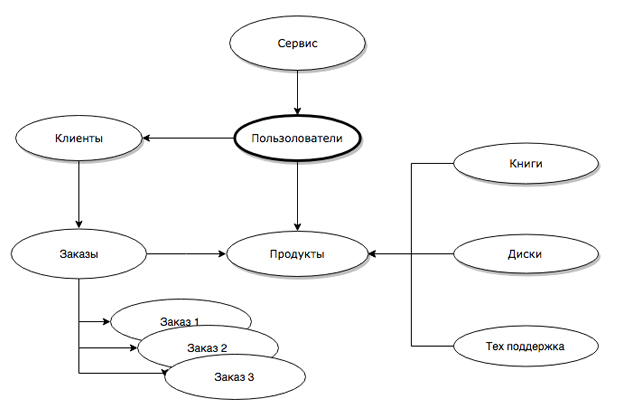

Основы JS
Онищенко Дмитрий
Справочники и спецификации
Ключевые особенности языка
Интерпретируемый
Однопоточный
Асинхронный
Динамический
Клиентский
Зарезервированные слова
- break
- default
- function
- return
- var
- case
- delete
- if
- switch
- throw
- void
- catch
- do
- in
- this
- while
- const
- else
- instanceof
- with
- continue
- finally
- let
- try
- debugger
- for
- new
- typeof
Взаимодействие с пользователем
alert(message)
prompt(title, default)
confirm(question)
Операторы ветвления
if / else / else if
? :
switch / case
Циклы
while
do / while
for / for in
Функции
function [ functionName ] (arg1, arg2 ..., argN) {
тело функции;
[ возвращаемый результат ]
}
functionName()
Методы работы с массивами
- push/pop, shift/unshift, splice – для добавления и удаления элементов.
- join/split – для преобразования строки в массив и обратно.
- slice – копирует участок массива.
- sort – для сортировки массива. Если не передать функцию сравнения – сортирует элементы как строки.
- reverse – меняет порядок элементов на обратный.
- concat – объединяет массивы.
- indexOf/lastIndexOf – возвращают позицию элемента в массиве (не поддерживается в IE8-).
OOП - Объектно-ориенторованное программирование
Методология программирования, основанная на представлении программы в виде совокупности обьектов, каждый из которых является экземпляром определенного класса
Абстрактный пример архитектуры интернет магазина с использованием ООП

Обьект
Обычная переменная которая может иметь свойства и методы
Классы
Класс - это "чертеж" по которому создаются новые обьекты
Основные принципы объектно-ориентированного программирования
- Наследования – позволяет создавать новый класс на базе другого.
- Полиморфизм – это способность объектов с одним интерфейсом иметь различную реализацию
- Абстракция – позволяет выделять из некоторой сущности только необходимые характеристики и методы, которые в полной мере описывают объект. Непосредственно связанн с инкапсуляцией
- Инкапсуляция – позволяет скрывать внутреннюю реализацию.
Плюсы ООП
- Абстракция от деталей реализации
- Модульность
- Ре-используемый компоненты
- Возможность создавать расширяемые системы
- Универсальность
Минусы ООП
- Некоторое снижение быстродействия за счет более сложной архитектуры
- Использование "четких" парадигм, методологий и шаблонов проектирования
- Проектирование - задача куда более сложная, чем использование
- Сложных иерархии классов. Не всегда легко определить, какие поля и методы относятся к данному классу.
- Излишняя универсальность